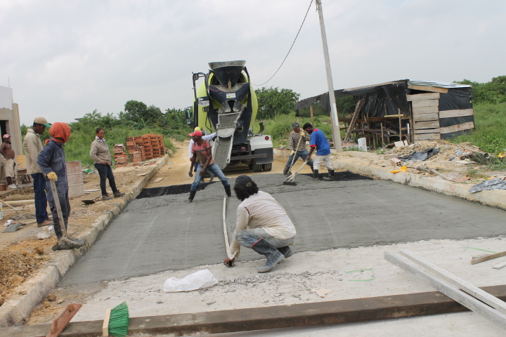
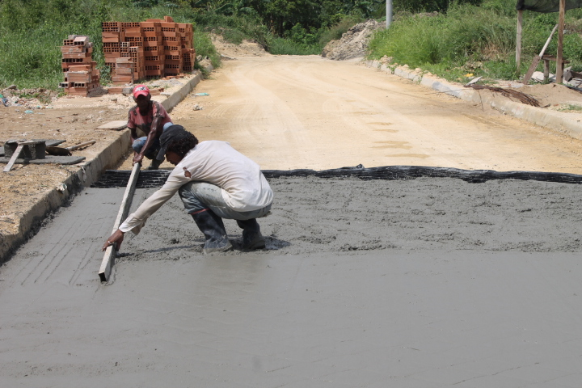
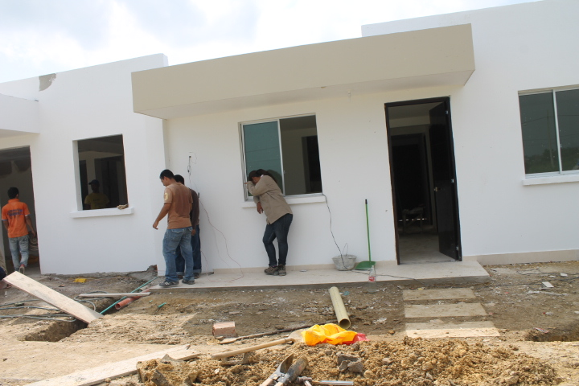

Construcción e Infraestructura
Ejecutamos todo tipo de proyectos de construcción civil, desde obras residenciales hasta infraestructura vial e industrial.

Viviendas y Edificaciones
Construcción de viviendas unifamiliares, multifamiliares y edificaciones comerciales desde la cimentación hasta los acabados. Cada proyecto es supervisado por ingenieros civiles certificados, garantizando calidad estructural y cumplimiento de normas sismo-resistentes colombianas NSR-10.

Obras Civiles y Estructuras
Construcción de estructuras en concreto reforzado, acero y mampostería para uso residencial, comercial e industrial. Incluye vías internas en concreto hidráulico, andenes, zonas duras, muros de contención y obras de urbanismo con altos estándares técnicos y vida útil garantizada.

Movimiento de Tierra y Descapote
Preparación de terrenos para construcción mediante descapote, excavación, nivelación y compactación. Contamos con maquinaria especializada para remover, clasificar y disponer adecuadamente los materiales según las especificaciones del proyecto y la normativa ambiental vigente.

Movimiento y Transporte de Material
Servicio de cargue, transporte y disposición de materiales de construcción, escombros y material sobrante. Coordinamos la logística completa con vehículos y equipos adecuados, cumpliendo con las rutas y horarios establecidos por la autoridad competente en Cartagena.

Remodelaciones
Adecuación y renovación de espacios residenciales y comerciales: demoliciones parciales, redistribución de áreas, cambio de pisos y muros, actualización de instalaciones técnicas y acabados de alta especificación. Entregamos el espacio transformado con mínima afectación a las operaciones del cliente.